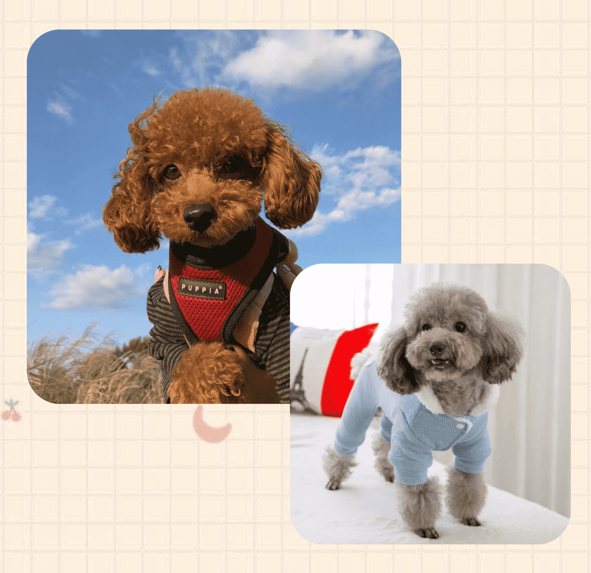

貴賓犬
（又名貴婦犬，英語：Poodle，法語：Caniche，德語：Pudel）
是一種水獵犬
毛色：黑色、銀灰色、白色、紅色、杏色、奶油色、巧克力色…等。
體型：由小到大分別是：玩具型、迷你型、標準型。
眼睛：呈現杏仁形狀的深褐色眼睛。
耳朵：長而寬，長度約到臉頰旁。
身體：背部短，強而有力的後腿及強健的頸部。
尾巴：底端位置高且直立，與身體成一斜角。

耐熱
夏季養狗最怕的就是狗狗中暑，而貴賓犬在最耐熱的寵物狗排行榜名列第三，除非在大太陽下出去玩，不然很是很好養活的。
聰明伶俐
在狗狗智商排名中，貴賓狗屬於排名第二聰明的狗狗品種。
因此，紅貴賓的學習能力很強，容易訓練、教導，在飼養上會輕鬆許多。
性格親人、友善
雖然說對陌生人的警戒心很強，但貴賓狗天生性格其實很親人、友善、喜歡和人相處。
沒有明顯遺傳疾病
有許多品種狗都會有常見的遺傳疾病，但紅貴賓就沒有明顯的遺傳疾病，只不過因為身形偏小，所以跟大多數的小型犬一樣容易有關節習慣性的脫臼。


要勤梳毛
貴賓的毛捲曲容易打結，洗澡不能太勤，一周一兩次就好，洗太多會乾燥容易得皮膚病，並注意耳朵的清潔。
黏人
貴賓要比其他一些狗狗害怕寂寞，牠喜歡和人在一起，所以飼主要多花時間陪。
幼犬教育
一定要在這段時間好好訓練它，貴賓很聰明，這段時間培養好它的生活習慣（比如上廁所服從主人不要亂叫） 這段時間是狗狗性格定型階段。
飲食注意
冰淇淋、蛋糕等甜食容易引起腹瀉，牛奶對於貴賓也不利於吸收，容易腹瀉、上火。貴賓也不能吃油膩、刺激、辣的食物。
可以適當吃些動物肝臟對毛好，但是不能總吃，要適量，否則容易維生素a中毒。

遺傳性視網膜退化
大部分的貴賓狗狗都會有視網膜退化的遺傳問題，嚴重的話甚至會讓狗狗全盲。
此外，如果狗狗年紀大的話，也會更容易罹患這種疾病。
膝關節異位
膝關節異位是小型犬常會出現的先天遺傳問題，
雙腳站立和過重的體重也會讓膝關節異位發作的機率上升。
所以雖然狗狗站起來看起來有趣又可愛，還是別再讓狗狗雙腳站立啦！
中耳炎/外耳炎
垂耳的貴賓狗耳朵容易被悶住，耳道也因此更容易滋生細菌、發炎甚至感染。
異位性皮膚炎
遺傳的體質，或是環境、飲食中的過敏源，都有可能是導致異位性皮膚炎的原因。
狗狗如果有異位性皮膚炎，除了維持家中整潔、並試著找出過敏的原因，建議可以依照狗狗的皮膚狀況定期洗澡，選用成份較天然溫和的洗毛精。
先天性心臟病
小型犬都容易有先天性的心臟疾病，要特別注意毛孩是否常常太喘、咳嗽或是體重持續減輕等等的問題，如果有的話，可要趕緊帶去給獸醫師檢查喔